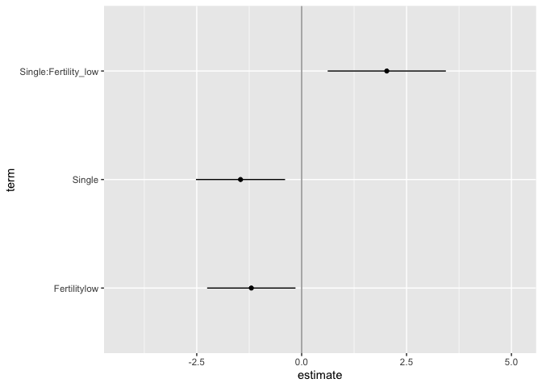

multiverse is an R package that allows users to specify multiverse of statistical analysis, also called a multiverse analysis. In a multiverse analysis, researchers identify sets of defensible analysis choices (e.g., different ways of excluding outliers, different data transformations), implement them all, and then report the outcomes of all analyses resulting from all possible choice combinations. However, declaring several alternative analysis paths can be tricky, often requiring custom control flows such as nested for-loops and multiple if-else statements. The goal of multiverse is to allow users to create multiverse analyses in a concise and easily interpretable manner. multiverse enables this by providing both an embedded Domain-Specific Language (DSL) as well as an API to interact with and extract results from a multiverse analysis, which can then be neatly wrapped within a larger analysis in R.
Steegen et al. first put forth the concept of multiverse analysis; Simonsohn et al. put forth a similar notion called the Specification curve analysis.
In a multiverse analysis, alternate analysis paths can arise from having points in the analysis where an analyst has to make a decision of choosing between two or more reasonable steps. We refer to these decision points as parameters, and they could be:
Data substitution parameters offer to switch between different raw datasets, either collected or simulated.
Data processing parameters offer to process the same raw data in different ways before it is analysed.
Modeling parameters offer different ways of analysing the same processed data
Presentation parameters offer different ways of presenting analysis outcomes
The multiverse documentation predominantly follows the tidyverse syntax
Installation
You can install the latest development version from GitHub with these R commands:
install.packages("devtools")
devtools::install_github("mucollective/multiverse")Overview
For details on how to quickly get started with this package, please refer to this document as well as the following vignettes:
- How
multiversecan be used in different environments such as in RScripts and RMarkdown. Seevignette("multiverse-in-rmd"). - How alternate analysis paths can be declared in
multiverseusing branch. Seevignette("branch"). - How conditions can be declared in
multiverseusing conditions; conditions can be used to state when two steps in a multiverse are incompatible with one another. Seevignette("conditions"). - How multiverse results can be extracted and visualised. . See
vignette("visualising-multiverse").
We also implement a series of end-to-end multiverse implementations using this package to demonstrate how it might be used (which can be found in the vignettes):
- Steegen et al.’s original multiverse analysis of the paper The fluctuating female vote: Politics, religion, and the ovulatory cycle; can also be found below.
- Simonsohn et al.’s specification curve analysis of the paper Female hurricanes are deadlier than male hurricanes
- Dragicevic et al.’s mini-paper Adding Inferential Information to plots using Resampling and Animations (from Increasing the transparency of research papers with explorable multiverse analyses )
- Dragicevic et al.’s mini-paper Re-evaluating the efficiency of Physical Visualisations (from Increasing the transparency of research papers with explorable multiverse analyses )
Example analysis
In this document, we outline an initial approach to conducting a multiverse analysis in R. We will show how our package can be used to perform the multiverse analysis outlined by Steegen et al. in Increasing Transparency Through a Multiverse Analysis.
Data analysis can involve several decisions involving two or more options. In most statistical analysis, these decisions are taken by the researcher based on some reasonable justification. However, for several decisions, there can be more than one reasonable options to choose from. A multiverse analysis is a form of analysis which makes all such decisions explicit and conducts the complete analysis for all combinations of options (of each decision).
Below, we first illustrate an example of a single analysis for a dataset. We will then extend it to a multiverse analysis.
The data
The first step is to read the raw data from the file and store it as a tibble. We will be following the tidy data format here. The data is provided with the package and can be loaded using the data("durante) command. In this example, we will use the data collected by Durante et al., which investigated the effect of fertility on religiosity and political attitudes. We will focus on their second study (which we store in df_durante).
data("durante")
df_durante <- duranteThe data look like this:
df_durante %>%
head()| WorkerID | Rel1 | Rel2 | Rel3 | Abortion | Marriage | StemCell | RestrictAbortion | Marijuana | FreeMarket | RichTax | StLiving | Profit | PrivSocialSec | Sure1 | Sure2 | Relationship | ReportedCycleLength | Vote | Donate | DateTesting | StartDateofLastPeriod | StartDateofPeriodBeforeLast | StartDateNext |
|---|---|---|---|---|---|---|---|---|---|---|---|---|---|---|---|---|---|---|---|---|---|---|---|
| 1 | 8 | 8 | 7 | 2 | 7 | 7 | 7 | 2 | 4 | 7 | 6 | 6 | 3 | 9 | 9 | 4 | 28 | 1 | 1 | 2012-05-22 | 2012-05-18 | 2012-04-18 | 2012-06-15 |
| 2 | 8 | 7 | 7 | 7 | 2 | 5 | 1 | 6 | 4 | 4 | 5 | 4 | 6 | 9 | 7 | 3 | 28 | 1 | 1 | 2012-05-22 | 2012-04-29 | 2012-03-31 | 2012-05-30 |
| 3 | 6 | 6 | 2 | 3 | 1 | 6 | 4 | 7 | 2 | 5 | 5 | 3 | 5 | 8 | 7 | 3 | 27 | 1 | 1 | 2012-05-21 | 2012-05-04 | 2012-04-07 | 2012-05-31 |
| 4 | 7 | 8 | 6 | 7 | 5 | 6 | 2 | 5 | 3 | 6 | 5 | 5 | 4 | 9 | 9 | 3 | 37 | 1 | 1 | 2012-05-21 | 2012-04-27 | 2012-03-22 | 2012-06-05 |
| 5 | 7 | 7 | 9 | 7 | 1 | 4 | 1 | 4 | 6 | 5 | 2 | 2 | 3 | 5 | 4 | 3 | 38 | 1 | 1 | 2012-05-22 | 2012-04-19 | 2012-03-09 | 2012-05-25 |
| 6 | 9 | 9 | 9 | 1 | 7 | 6 | 7 | 2 | 3 | 5 | 3 | 5 | 5 | 8 | 8 | 2 | 30 | 0 | 0 | 2012-05-22 | 2012-04-21 | 2012-03-20 | 2012-05-22 |
The original paper looked at the relationship between fertility, relationship status, and religiosity. But there are many reasonable ways to have defined each of these three variables from this dataset, so it is a good candidate for multiverse analysis.
A single data set analysis: one possible analysis among many
The data collected needs to be processed before it can be modeled. Preparing the data set for analysis can involve several steps and decisions regarding how to encode the different raw values. The following is one example of data processing that can be performed for this study, where the original authors of the study compute, for each participant in their study, the typical duration of their menstrual cycle (ComputedCycleNext), the likely date of the next onset of their menstrual cycle (NextMenstrualOnset), the day of the cycle that they were in when taking the questionnaire (CycleDay); they also codify participants’ relationship status into a binary value (Relationship), and remove data which they believe might have been not captured accurately such as if the calculation of the length of menstrual cycle is either too short or too long (ComputedCycleLength > 25 & ComputedCycleLength < 35), or if the participants were quite unsure of their responses (Sure1 <= 5 & Sure2 <= 5).
one_universe = df_durante %>%
mutate( ComputedCycleLength = StartDateofLastPeriod - StartDateofPeriodBeforeLast ) %>%
mutate( NextMenstrualOnset = StartDateofLastPeriod + ComputedCycleLength ) %>%
mutate(
CycleDay = 28 - (NextMenstrualOnset - DateTesting),
CycleDay = ifelse(CycleDay > 1 & CycleDay < 28, CycleDay, ifelse(CycleDay < 1, 1, 28))
) %>%
mutate(
RelationshipStatus = factor(ifelse(Relationship==1 | Relationship==2, "Single", "Relationship"))
) %>%
filter( ComputedCycleLength > 25 & ComputedCycleLength < 35) %>%
filter( Sure1 > 6 | Sure2 > 6 ) %>%
mutate( Fertility = factor( ifelse(CycleDay >= 7 & CycleDay <= 14, "high", ifelse(CycleDay >= 17 & CycleDay <= 25, "low", "medium")) ) )The transformed data for this one universe looks like this:
one_universe %>%
select( NextMenstrualOnset, Relationship, Sure1, Sure2, Fertility, everything() ) %>%
head()| NextMenstrualOnset | Relationship | Sure1 | Sure2 | Fertility | WorkerID | Rel1 | Rel2 | Rel3 | Abortion | Marriage | StemCell | RestrictAbortion | Marijuana | FreeMarket | RichTax | StLiving | Profit | PrivSocialSec | ReportedCycleLength | Vote | Donate | DateTesting | StartDateofLastPeriod | StartDateofPeriodBeforeLast | StartDateNext | ComputedCycleLength | CycleDay | RelationshipStatus |
|---|---|---|---|---|---|---|---|---|---|---|---|---|---|---|---|---|---|---|---|---|---|---|---|---|---|---|---|---|
| 2012-06-17 | 4 | 9 | 9 | medium | 1 | 8 | 8 | 7 | 2 | 7 | 7 | 7 | 2 | 4 | 7 | 6 | 6 | 3 | 28 | 1 | 1 | 2012-05-22 | 2012-05-18 | 2012-04-18 | 2012-06-15 | 30 days | 2 | Relationship |
| 2012-05-28 | 3 | 9 | 7 | low | 2 | 8 | 7 | 7 | 7 | 2 | 5 | 1 | 6 | 4 | 4 | 5 | 4 | 6 | 28 | 1 | 1 | 2012-05-22 | 2012-04-29 | 2012-03-31 | 2012-05-30 | 29 days | 22 | Relationship |
| 2012-05-31 | 3 | 8 | 7 | low | 3 | 6 | 6 | 2 | 3 | 1 | 6 | 4 | 7 | 2 | 5 | 5 | 3 | 5 | 27 | 1 | 1 | 2012-05-21 | 2012-05-04 | 2012-04-07 | 2012-05-31 | 27 days | 18 | Relationship |
| 2012-05-23 | 2 | 8 | 8 | medium | 6 | 9 | 9 | 9 | 1 | 7 | 6 | 7 | 2 | 3 | 5 | 3 | 5 | 5 | 30 | 0 | 0 | 2012-05-22 | 2012-04-21 | 2012-03-20 | 2012-05-22 | 32 days | 27 | Single |
| 2012-05-31 | 4 | 9 | 9 | low | 7 | 5 | 8 | 5 | 5 | 4 | 5 | 5 | 7 | 5 | 7 | 3 | 7 | 2 | 28 | 1 | 1 | 2012-05-22 | 2012-05-03 | 2012-04-05 | 2012-05-31 | 28 days | 19 | Relationship |
| 2012-06-15 | 1 | 8 | 8 | medium | 11 | 2 | 5 | 8 | 7 | 1 | 7 | 1 | 7 | 2 | 7 | 5 | 5 | 5 | 30 | 1 | 1 | 2012-05-24 | 2012-05-18 | 2012-04-20 | 2012-06-17 | 28 days | 6 | Single |
one_universe %>%
ggplot(aes(x = Relationship, y = Rel1 + Rel2 + Rel3, color = Fertility)) +
stat_summary(position = position_dodge(width = .1), fun.data = "mean_se")
However, there also exists other valid processing options: instead of calculating NextMenstrualOnset = StartDateofLastPeriod + ComputedCycleLength, it can also be calculated as StartDateofLastPeriod + ReportedCycleLength. Such alternate processing options can exist for several decisions that a researcher makes in the data processing, analysis and presentation stages. This can thus result in a multiverse of analysis, with the one described above representing a single universe.
How would one declare such different alternate ways of calculation easily and efficiently? Below, we describe how our package allows you to make such declarations with ease.
Multiverse specification
multiverse provides flexible functions which can be used to easily multiplex over alternative analysis steps, and perform a multiverse analysis.
The first step is to define a new multiverse. We will use the multiverse object to create a set of universes, each representing a different way of analysing our data.
M <- multiverse()Two ways to building a multiverse
The multiverse enables the users to declare alternative analysis using a embedded DSL, the syntax for which closely resembles R and tidyverse syntax. However, this DSL cannot be executed directly in R and needs to be declared, processed and executed in a special environment. To be more precise, multiverse takes the user declared code in the DSL form, parses the abstract syntax tree, and rewrites the code into multiple versions of valid R code corresponding to each universe in the multiverse.
To get around these limitations, we declare this code “inside the multiverse object”. In the multiverse package, we support this declaration in two ways:
- using multiverse code chunks, which allow users to declare multiverse code in a dedicated code chunk, and is more consistent with the interactive programming interface of RStudio.
- using the
inside()function. The inside function which allows users to declare multiverse code in RScripts or regular R code blocks, and is more suited for a script-style implementation.
Note that the inside function is more suited for a script-style implementation. Keeping consistency with the interactive programming interface of RStudio, we also offer the user a multiverse code block which can be used instead of the r code block to write code inside a multiverse object (see for more details on using the multiverse with RMarkdown).
Multiverse code blocks
We can use the multiverse code blocks instead of the regular r code block to write code inside a multiverse object (see for more details on using the multiverse code blocks with RMarkdown). This allows you to write more concise code and is more consistent with the interactive programming interface of RStudio. A multiverse code block is a custom engine designed to work with the multiverse package, to implement the multiverse analyses. Below we show how code can be implemented using the multiverse code block
```{multiverse default-m-1, inside = M}
# here we just create the variable `df` in the multiverse
df <- df_durante
# here, we perform two `mutate` operations in the multiverse.
# although they could have been chained, this illustrates
# how multiple variables can be declared together using the `{}`
df <- df_durante %>%
mutate( ComputedCycleLength = StartDateofLastPeriod - StartDateofPeriodBeforeLast ) %>%
mutate( NextMenstrualOnset = branch(menstrual_calculation,
"mc_option1" ~ StartDateofLastPeriod + ComputedCycleLength,
"mc_option2" ~ StartDateofLastPeriod + ReportedCycleLength,
"mc_option3" ~ StartDateNext)
)
```The code within the second mutate function call is written in the multiverse DSL and cannot be executed directly in R. For now, ignore what the branch function does as we will discuss about this in more detail in the next section
We provide the ability to declare multiverse code block as an Addin in RStudio. Users can click on Addins toolbar menu in RStudio (see the image below). This would create a multiverse code block at the location of the cursor in the document.

Alternately, users can insert a multiverse code block using a keyboard shortcut. Users can create a keyboard shortcut to declare a multiverse code block inside a RMarkdown document through the following steps:
- Tools > Addins > Browse Addins… > Keyboard Shortcuts
- Next, in the filter input field, type multiverse. You will see one result with “Insert multiverse code chunk” as the name.
- Click on the Shortcut field and press Cmd+Option+M (on Mac OS) or Ctrl+Shift+Alt+M (on Windows).
- Click “Apply” and exit the dialog box
Please refer to for more details on using the multiverse code blocks with RMarkdown.
inside()
Alternatively, we can use regular r code blocks instead of the regular to write code inside a multiverse object The inside() function takes in two arguments: 1. the multiverse object, M; and 2. the code for the analysis (including branches). Note that if you are passing multiple expressions, they should be enclosed within {}.
Note that inside() is primarily designed for script style programming. If a user is working with an RScript, the previous code can be declared “inside the multiverse object” using the inside() function as follows:
# here we just create the variable `df` in the multiverse
inside(M, df <- df_durante)
# here, we perform two `mutate` operations in the multiverse.
# although they could have been chained, this illustrates
# how multiple variables can be declared together using the `{}`
inside(M, {
df <- df %>%
mutate( ComputedCycleLength = StartDateofLastPeriod - StartDateofPeriodBeforeLast )
df <- df %>%
mutate( NextMenstrualOnset = branch(menstrual_calculation,
"mc_option1" ~ StartDateofLastPeriod + ComputedCycleLength,
"mc_option2" ~ StartDateofLastPeriod + ReportedCycleLength,
"mc_option3" ~ StartDateNext)
)
})In the rest of this vignette, we will use multiverse code blocks to specify the multiverse. Please refer to the vignette (vignette("multiverse-in-rmd")) for more details on declaring multiverse analyses in RScripts and RMarkdown
Declaring alternative analyses
Coming back to the analysis, the next step is to define our possible alternate analysis paths. The multiverse package includes functions that aim to make it easy to multiplex over these alternative analysis steps and write multiverse analyses. We do this by enabling analysts to declare code using syntax which is as close to that of a single universe analysis as possible.
Consider these first few lines from the transformation code in the single analysis above:
df <- df_durante %>%
mutate(ComputedCycleLength = StartDateofLastPeriod - StartDateofPeriodBeforeLast) %>%
mutate(NextMenstrualOnset = StartDateofLastPeriod + ComputedCycleLength)But NextMenstrualOnset could be calculated in at least two other reasonable ways:
NextMenstrualOnset = StartDateofLastPeriod + ReportedCycleLengthNextMenstrualOnset = StartDateNext
To create a multiverse that includes these three possible processing options, we can use the branch() function. The branch() function accepts three or more arguments. The first argument defines a parameter (here menstrual_calculation) which is used as an identifier for the decision point. The subsequent arguments define the different options that the parameter can take which can optionally be named. Each option defines the different choices that a researcher can make at that decision point of their analysis. Here, the researcher declares three ways of computing the variable NextMenstrualOnset. Each option can be named (here, "mc_option1", "mc_option2", "mc_option3"); however, names can be omitted. We strongly recommend naming the branches with meaningful names to help the user keep track of choices. If omitted, the entire syntax for performing that operation will be treated as the name for that particular option.
```{multiverse parameter_options, inside = M}
# here, we perform two `mutate` operations in the multiverse.
# although they could have been chained, this illustrates
# how multiple variables can be declared together using the `{}`
df <- df_durante %>%
mutate( ComputedCycleLength = StartDateofLastPeriod - StartDateofPeriodBeforeLast ) %>%
mutate( NextMenstrualOnset = branch(menstrual_calculation,
"mc_option1" ~ StartDateofLastPeriod + ComputedCycleLength,
"mc_option2" ~ StartDateofLastPeriod + ReportedCycleLength,
"mc_option3" ~ StartDateNext)
)
```More details on the branch() function can be found in the corresponding vignette(branch).
The multiverse, with declared code and branches
Once you add the code to the multiverse, it automatically parses the code to identify the parameters and the corresponding options that have been defined for each parameter.
Once the code has been added, the multiverse object will have the following attributes:
-
parameters, which is a list of parameters
parameters(M)
#> $menstrual_calculation
#> $menstrual_calculation[[1]]
#> [1] "mc_option1"
#>
#> $menstrual_calculation[[2]]
#> [1] "mc_option2"
#>
#> $menstrual_calculation[[3]]
#> [1] "mc_option3"-
conditions, which is a list of conditions (we’ll define this later) -
expand, which is a tibble consisting of all possible combination of values for the multiverse
expand(M) %>% select(-.code)| .universe | menstrual_calculation | .parameter_assignment | .results |
|---|---|---|---|
| 1 | mc_option1 | mc_option1 | <environment: 0x7fb6158f41d0> |
| 2 | mc_option2 | mc_option2 | <environment: 0x7fb615927a68> |
| 3 | mc_option3 | mc_option3 | <environment: 0x7fb615943748> |
-
code, which is the code that the user passes to the multiverse to conduct a multiverse analysis. However, we do not execute this code and it is stored unevaluated. The user can interactively edit and rewrite this code, and can execute it for the current analysis or the entire multiverse using dedicated functions.
code(M)
#> $parameter_options
#> {
#> df <- df_durante %>% mutate(ComputedCycleLength = StartDateofLastPeriod -
#> StartDateofPeriodBeforeLast) %>% mutate(NextMenstrualOnset = branch(menstrual_calculation,
#> "mc_option1" ~ StartDateofLastPeriod + ComputedCycleLength,
#> "mc_option2" ~ StartDateofLastPeriod + ReportedCycleLength,
#> "mc_option3" ~ StartDateNext))
#> }Running a single analysis from the multiverse
At this point, we have defined three possible processing options (three universes) in our multiverse. Keeping consistency with the interactive programming interface of RStudio, we also execute the default analysis in each step. In the previous step, we stored the results in the variable df. We can see the result of the default analysis in the multiverse by accessing the data frame from the multiverse object as shown:
M$df %>% head()| WorkerID | Rel1 | Rel2 | Rel3 | Abortion | Marriage | StemCell | RestrictAbortion | Marijuana | FreeMarket | RichTax | StLiving | Profit | PrivSocialSec | Sure1 | Sure2 | Relationship | ReportedCycleLength | Vote | Donate | DateTesting | StartDateofLastPeriod | StartDateofPeriodBeforeLast | StartDateNext | ComputedCycleLength | NextMenstrualOnset |
|---|---|---|---|---|---|---|---|---|---|---|---|---|---|---|---|---|---|---|---|---|---|---|---|---|---|
| 1 | 8 | 8 | 7 | 2 | 7 | 7 | 7 | 2 | 4 | 7 | 6 | 6 | 3 | 9 | 9 | 4 | 28 | 1 | 1 | 2012-05-22 | 2012-05-18 | 2012-04-18 | 2012-06-15 | 30 days | 2012-06-15 |
| 2 | 8 | 7 | 7 | 7 | 2 | 5 | 1 | 6 | 4 | 4 | 5 | 4 | 6 | 9 | 7 | 3 | 28 | 1 | 1 | 2012-05-22 | 2012-04-29 | 2012-03-31 | 2012-05-30 | 29 days | 2012-05-30 |
| 3 | 6 | 6 | 2 | 3 | 1 | 6 | 4 | 7 | 2 | 5 | 5 | 3 | 5 | 8 | 7 | 3 | 27 | 1 | 1 | 2012-05-21 | 2012-05-04 | 2012-04-07 | 2012-05-31 | 27 days | 2012-05-31 |
| 4 | 7 | 8 | 6 | 7 | 5 | 6 | 2 | 5 | 3 | 6 | 5 | 5 | 4 | 9 | 9 | 3 | 37 | 1 | 1 | 2012-05-21 | 2012-04-27 | 2012-03-22 | 2012-06-05 | 36 days | 2012-06-05 |
| 5 | 7 | 7 | 9 | 7 | 1 | 4 | 1 | 4 | 6 | 5 | 2 | 2 | 3 | 5 | 4 | 3 | 38 | 1 | 1 | 2012-05-22 | 2012-04-19 | 2012-03-09 | 2012-05-25 | 41 days | 2012-05-25 |
| 6 | 9 | 9 | 9 | 1 | 7 | 6 | 7 | 2 | 3 | 5 | 3 | 5 | 5 | 8 | 8 | 2 | 30 | 0 | 0 | 2012-05-22 | 2012-04-21 | 2012-03-20 | 2012-05-22 | 32 days | 2012-05-22 |
A multiverse with all possible combinations specified
Besides calculating the onset of the next menstruation cycle, there are other variables which have multiple valid and reasonable processing options. According to Steegen et al., these include defining Relationship and Fertility, and exclusion criteria based on the values for cycle length and certainty of responses. The next code chunk illustrates how this can be added to the multiverse object defined above.
```{multiverse default-m-2 inside = M}
df <- df %>%
mutate(Relationship = branch( relationship_status,
"rs_option1" ~ factor(ifelse(Relationship==1 | Relationship==2, 'Single', 'Relationship')),
"rs_option2" ~ factor(ifelse(Relationship==1, 'Single', 'Relationship')),
"rs_option3" ~ factor(ifelse(Relationship==1, 'Single', ifelse(Relationship==3 | Relationship==4, 'Relationship', NA))) )
) %>%
mutate(
CycleDay = 28 - (NextMenstrualOnset - DateTesting),
CycleDay = ifelse(CycleDay > 1 & CycleDay < 28, CycleDay, ifelse(CycleDay < 1, 1, 28))
) %>%
filter( branch(cycle_length,
"cl_option1" ~ TRUE,
"cl_option2" ~ ComputedCycleLength > 25 & ComputedCycleLength < 35,
"cl_option3" ~ ReportedCycleLength > 25 & ReportedCycleLength < 35
)) %>%
filter( branch(certainty,
"cer_option1" ~ TRUE,
"cer_option2" ~ Sure1 > 6 | Sure2 > 6
)) %>%
mutate( Fertility = branch( fertile,
"fer_option1" ~ factor( ifelse(CycleDay >= 7 & CycleDay <= 14, "high", ifelse(CycleDay >= 17 & CycleDay <= 25, "low", "medium")) ),
"fer_option2" ~ factor( ifelse(CycleDay >= 6 & CycleDay <= 14, "high", ifelse(CycleDay >= 17 & CycleDay <= 27, "low", "medium")) ),
"fer_option3" ~ factor( ifelse(CycleDay >= 9 & CycleDay <= 17, "high", ifelse(CycleDay >= 18 & CycleDay <= 25, "low", "medium")) ),
"fer_option4" ~ factor( ifelse(CycleDay >= 8 & CycleDay <= 14, "high", "low") ),
"fer_option5" ~ factor( ifelse(CycleDay >= 8 & CycleDay <= 17, "high", "low") )
))
})
```Since the multiverse object has already been created and the one parameter has already been defined, this will simply add to the previous code:
code(M)
#> $parameter_options
#> {
#> df <- df_durante %>% mutate(ComputedCycleLength = StartDateofLastPeriod -
#> StartDateofPeriodBeforeLast) %>% mutate(NextMenstrualOnset = branch(menstrual_calculation,
#> "mc_option1" ~ StartDateofLastPeriod + ComputedCycleLength,
#> "mc_option2" ~ StartDateofLastPeriod + ReportedCycleLength,
#> "mc_option3" ~ StartDateNext))
#> }
#>
#> $`default-m-2`
#> {
#> df <- df %>% mutate(RelationshipStatus = branch(relationship_status,
#> "rs_option1" ~ factor(ifelse(Relationship == 1 | Relationship ==
#> 2, "Single", "Relationship")), "rs_option2" ~ factor(ifelse(Relationship ==
#> 1, "Single", "Relationship")), "rs_option3" ~ factor(ifelse(Relationship ==
#> 1, "Single", ifelse(Relationship == 3 | Relationship ==
#> 4, "Relationship", NA))))) %>% mutate(CycleDay = 28 -
#> (NextMenstrualOnset - DateTesting), CycleDay = ifelse(CycleDay >
#> 1 & CycleDay < 28, CycleDay, ifelse(CycleDay < 1, 1,
#> 28))) %>% filter(branch(cycle_length, "cl_option1" ~
#> TRUE, "cl_option2" ~ ComputedCycleLength > 25 & ComputedCycleLength <
#> 35, "cl_option3" ~ ReportedCycleLength > 25 & ReportedCycleLength <
#> 35)) %>% filter(branch(certainty, "cer_option1" ~ TRUE,
#> "cer_option2" ~ Sure1 > 6 | Sure2 > 6)) %>% mutate(Fertility = branch(fertile,
#> "fer_option1" ~ factor(ifelse(CycleDay >= 7 & CycleDay <=
#> 14, "high", ifelse(CycleDay >= 17 & CycleDay <= 25,
#> "low", "medium"))), "fer_option2" ~ factor(ifelse(CycleDay >=
#> 6 & CycleDay <= 14, "high", ifelse(CycleDay >= 17 &
#> CycleDay <= 27, "low", "medium"))), "fer_option3" ~
#> factor(ifelse(CycleDay >= 9 & CycleDay <= 17, "high",
#> ifelse(CycleDay >= 18 & CycleDay <= 25, "low",
#> "medium"))), "fer_option4" ~ factor(ifelse(CycleDay >=
#> 8 & CycleDay <= 14, "high", "low")), "fer_option5" ~
#> factor(ifelse(CycleDay >= 8 & CycleDay <= 17, "high",
#> "low"))))
#> }The expand function will contain all the possible combinations of the parameter options that have been identified.
| .universe | menstrual_calculation | relationship_status | cycle_length | certainty | fertile | .parameter_assignment | .results |
|---|---|---|---|---|---|---|---|
| 1 | mc_option1 | rs_option1 | cl_option1 | cer_option1 | fer_option1 | mc_option1 , rs_option1 , cl_option1 , cer_option1, fer_option1 | <environment: 0x7fb615fb49b0> |
| 2 | mc_option1 | rs_option1 | cl_option1 | cer_option1 | fer_option2 | mc_option1 , rs_option1 , cl_option1 , cer_option1, fer_option2 | <environment: 0x7fb6180cf5a8> |
| 3 | mc_option1 | rs_option1 | cl_option1 | cer_option1 | fer_option3 | mc_option1 , rs_option1 , cl_option1 , cer_option1, fer_option3 | <environment: 0x7fb61817a7d0> |
| 4 | mc_option1 | rs_option1 | cl_option1 | cer_option1 | fer_option4 | mc_option1 , rs_option1 , cl_option1 , cer_option1, fer_option4 | <environment: 0x7fb618294aa8> |
| 5 | mc_option1 | rs_option1 | cl_option1 | cer_option1 | fer_option5 | mc_option1 , rs_option1 , cl_option1 , cer_option1, fer_option5 | <environment: 0x7fb618314108> |
| 6 | mc_option1 | rs_option1 | cl_option1 | cer_option2 | fer_option1 | mc_option1 , rs_option1 , cl_option1 , cer_option2, fer_option1 | <environment: 0x7fb618390258> |
In our multiverse we have identified 5 options for calculating fertility, 3 options for calculating menstrual calculation and relationship status each, 3 wyas of excluding participants based on their cycle length and 2 ways of excluding participants based on the self-reported certainty of their responses.
This results in $ 5 = 270$ possible combinations.
We can then inspect the default analysis the default single universe analysis from this multiverse:
M$df %>%
head()| WorkerID | Rel1 | Rel2 | Rel3 | Abortion | Marriage | StemCell | RestrictAbortion | Marijuana | FreeMarket | RichTax | StLiving | Profit | PrivSocialSec | Sure1 | Sure2 | Relationship | ReportedCycleLength | Vote | Donate | DateTesting | StartDateofLastPeriod | StartDateofPeriodBeforeLast | StartDateNext | ComputedCycleLength | NextMenstrualOnset | RelationshipStatus | CycleDay | Fertility |
|---|---|---|---|---|---|---|---|---|---|---|---|---|---|---|---|---|---|---|---|---|---|---|---|---|---|---|---|---|
| 1 | 8 | 8 | 7 | 2 | 7 | 7 | 7 | 2 | 4 | 7 | 6 | 6 | 3 | 9 | 9 | 4 | 28 | 1 | 1 | 2012-05-22 | 2012-05-18 | 2012-04-18 | 2012-06-15 | 30 days | 2012-06-15 | Relationship | 4 | low |
| 2 | 8 | 7 | 7 | 7 | 2 | 5 | 1 | 6 | 4 | 4 | 5 | 4 | 6 | 9 | 7 | 3 | 28 | 1 | 1 | 2012-05-22 | 2012-04-29 | 2012-03-31 | 2012-05-30 | 29 days | 2012-05-30 | Relationship | 20 | low |
| 3 | 6 | 6 | 2 | 3 | 1 | 6 | 4 | 7 | 2 | 5 | 5 | 3 | 5 | 8 | 7 | 3 | 27 | 1 | 1 | 2012-05-21 | 2012-05-04 | 2012-04-07 | 2012-05-31 | 27 days | 2012-05-31 | Relationship | 18 | low |
| 6 | 9 | 9 | 9 | 1 | 7 | 6 | 7 | 2 | 3 | 5 | 3 | 5 | 5 | 8 | 8 | 2 | 30 | 0 | 0 | 2012-05-22 | 2012-04-21 | 2012-03-20 | 2012-05-22 | 32 days | 2012-05-22 | NA | 28 | low |
| 7 | 5 | 8 | 5 | 5 | 4 | 5 | 5 | 7 | 5 | 7 | 3 | 7 | 2 | 9 | 9 | 4 | 28 | 1 | 1 | 2012-05-22 | 2012-05-03 | 2012-04-05 | 2012-05-31 | 28 days | 2012-05-31 | Relationship | 19 | low |
| 11 | 2 | 5 | 8 | 7 | 1 | 7 | 1 | 7 | 2 | 7 | 5 | 5 | 5 | 8 | 8 | 1 | 30 | 1 | 1 | 2012-05-24 | 2012-05-18 | 2012-04-20 | 2012-06-17 | 28 days | 2012-06-17 | Single | 4 | low |
Specifying conditions in the multiverse analysis
In our example, we are excluding participants based on their cycle length. This can be done in two ways: we can use the values of the variable,ComputedCycleLength or ReportedCycleLength. If we are using ComputedCycleLength to exclude participants, this means that we should not calculate the variable NextMenstrualOnset (date for the onset of the next menstrual cycle) using the ReportedCycleLength value. Similarly, if we are using ReportedCycleLength to exclude participants it is inconsistent to calculate NextMenstrualOnset using ComputedCycleLength. In a multiverse analysis, it may occur that the value of one variable might depend on the value of another variable defined previously.
We should be able to express these conditions in the multiverse. We show how this can be done, as well as other details on conditions, in the corresponding vignette(conditions).
Modeling
Steegen et al. define a multiverse which only considers the various data processing parameters, which we have defined above. To analyse the data, they create 6 models. The first model uses data from example #1. The other five models use the data from example #2, which we’ve using so far.
Model #2: Effect of Fertility and Relationship status on Religiosity
The authors compute a composite score of Religiosity by calculating the average of the three Religiosity items.
```{multiverse default-m-4, inside = M}
df <- df %>%
mutate( RelComp = round((Rel1 + Rel2 + Rel3)/3, 2))
```The authors perform an ANOVA to study the effect of Fertility, Relationship and their interaction term, on the composite Religiosity score. We fit the linear model using the call: lm( RelComp ~ Fertility * RelationshipStatus, data = df ) inside our multiverse and save the result to a variable called fit_RelComp.
```{multiverse default-m-5, inside = M, echo = FALSE}
fit_RelComp <- lm( RelComp ~ Fertility * RelationshipStatus, data = df )
```To extract the results from the analysis, we first create a tidy data-frame of the results of the model, using broom::tidy.
```{multiverse default-m-6, inside = M}
summary_RelComp <- fit_RelComp %>%
broom::tidy( conf.int = TRUE )
```Recall that declaring a variable in the multiverse only executes it in the default universe, and hence we need to call execute_multiverse() to execute our analysis in each multiverse.
Now that we have performed the analysis in each universe of the multiverse, we need to plot the data. To plot the data, we need to extract the relevant result data-frame from each universe into a single data-frame. The following code does this, by extracting the variable where the estimates of the model are stored, summary_RelComp and creating a single tidy data-frame that can be accessed easily.
expand(M) %>%
select(-.code) %>%
mutate( summary = map(.results, "summary_RelComp" ) ) %>%
unnest( cols = c(summary) ) %>%
head( 10 )| .universe | menstrual_calculation | relationship_status | cycle_length | certainty | fertile | .parameter_assignment | .results | term | estimate | std.error | statistic | p.value | conf.low | conf.high |
|---|---|---|---|---|---|---|---|---|---|---|---|---|---|---|
| 1 | mc_option1 | rs_option1 | cl_option1 | cer_option1 | fer_option1 | mc_option1 , rs_option1 , cl_option1 , cer_option1, fer_option1 | <environment: 0x7fb5fedc8bf0> | (Intercept) | 6.3749123 | 0.4015673 | 15.8750795 | 0.0000000 | 5.5859219 | 7.1639027 |
| 1 | mc_option1 | rs_option1 | cl_option1 | cer_option1 | fer_option1 | mc_option1 , rs_option1 , cl_option1 , cer_option1, fer_option1 | <environment: 0x7fb5fedc8bf0> | Fertilitylow | -1.1993860 | 0.5312236 | -2.2577801 | 0.0243951 | -2.2431222 | -0.1556497 |
| 1 | mc_option1 | rs_option1 | cl_option1 | cer_option1 | fer_option1 | mc_option1 , rs_option1 , cl_option1 , cer_option1, fer_option1 | <environment: 0x7fb5fedc8bf0> | Fertilitymedium | -0.2931038 | 0.5089591 | -0.5758887 | 0.5649527 | -1.2930952 | 0.7068877 |
| 1 | mc_option1 | rs_option1 | cl_option1 | cer_option1 | fer_option1 | mc_option1 , rs_option1 , cl_option1 , cer_option1, fer_option1 | <environment: 0x7fb5fedc8bf0> | RelationshipStatusSingle | -1.4568301 | 0.5358812 | -2.7185689 | 0.0067871 | -2.5097176 | -0.4039426 |
| 1 | mc_option1 | rs_option1 | cl_option1 | cer_option1 | fer_option1 | mc_option1 , rs_option1 , cl_option1 , cer_option1, fer_option1 | <environment: 0x7fb5fedc8bf0> | Fertilitylow:RelationshipStatusSingle | 2.0287775 | 0.7105383 | 2.8552683 | 0.0044810 | 0.6327276 | 3.4248273 |
| 1 | mc_option1 | rs_option1 | cl_option1 | cer_option1 | fer_option1 | mc_option1 , rs_option1 , cl_option1 , cer_option1, fer_option1 | <environment: 0x7fb5fedc8bf0> | Fertilitymedium:RelationshipStatusSingle | 1.0066406 | 0.6873797 | 1.4644608 | 0.1437042 | -0.3439077 | 2.3571890 |
| 2 | mc_option1 | rs_option1 | cl_option1 | cer_option1 | fer_option2 | mc_option1 , rs_option1 , cl_option1 , cer_option1, fer_option2 | <environment: 0x7fb5fedfb600> | (Intercept) | 6.3953846 | 0.3741693 | 17.0922227 | 0.0000000 | 5.6602251 | 7.1305441 |
| 2 | mc_option1 | rs_option1 | cl_option1 | cer_option1 | fer_option2 | mc_option1 , rs_option1 , cl_option1 , cer_option1, fer_option2 | <environment: 0x7fb5fedfb600> | Fertilitylow | -1.1692735 | 0.4910353 | -2.3812412 | 0.0176323 | -2.1340487 | -0.2044983 |
| 2 | mc_option1 | rs_option1 | cl_option1 | cer_option1 | fer_option2 | mc_option1 , rs_option1 , cl_option1 , cer_option1, fer_option2 | <environment: 0x7fb5fedfb600> | Fertilitymedium | -0.2516346 | 0.5161336 | -0.4875377 | 0.6260936 | -1.2657225 | 0.7624533 |
| 2 | mc_option1 | rs_option1 | cl_option1 | cer_option1 | fer_option2 | mc_option1 , rs_option1 , cl_option1 , cer_option1, fer_option2 | <environment: 0x7fb5fedfb600> | RelationshipStatusSingle | -1.6535869 | 0.4921908 | -3.3596461 | 0.0008408 | -2.6206324 | -0.6865414 |
We then take this data frame and plot the results as a confidence interval and point estimate using ggplot2. As you can see, this is similar to how you would plot a point estimate and confidence intervals for a regular analysis. We then use gganimate to animate through the results of each universe to quickly get an overview of the robustness of the results.
Note: we discuss extracting results from the multiverse and visualizing them in more detail in vignette(visualising-multiverse)
p <- expand(M) %>%
mutate( summary = map(.results, "summary_RelComp") ) %>%
unnest( cols = c(summary) ) %>%
mutate( term = recode( term,
"RelationshipStatusSingle" = "Single",
"Fertilitylow:RelationshipStatusSingle" = "Single:Fertility_low"
) ) %>%
filter( term != "(Intercept)" ) %>%
ggplot() +
geom_vline( xintercept = 0, colour = '#979797' ) +
geom_point( aes(x = estimate, y = term)) +
geom_errorbarh( aes(xmin = conf.low, xmax = conf.high, y = term), height = 0) +
transition_manual( .universe )
animate(p, nframes = 210, fps = 2)
Conclusion
The authors also perform a number of other analysis using the same independent variables (Fertility, Relationship Status and their interaction term), but with different dependent variables: Fiscal political attitudes, Social political attitudes, Voting preferences and Donation preferences, which we omit here.
We also implement a series of other end-to-end multiverse implementations using this package to demonstrate how it might be used:
- Simonsohn et al.’s specification curve analysis of the paper Female hurricanes are deadlier than male hurricanes
- Dragicevic et al.’s mini-paper Adding Inferential Information to plots using Resampling and Animations (from Increasing the transparency of research papers with explorable multiverse analyses )
- Dragicevic et al.’s mini-paper Re-evaluating the efficiency of Physical Visualisations (from Increasing the transparency of research papers with explorable multiverse analyses )